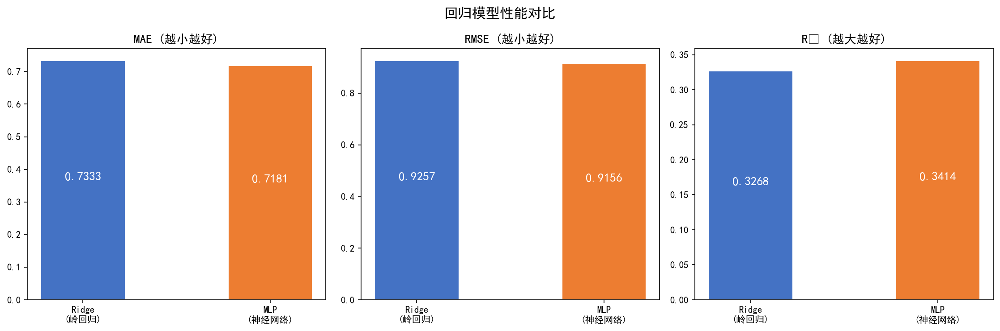
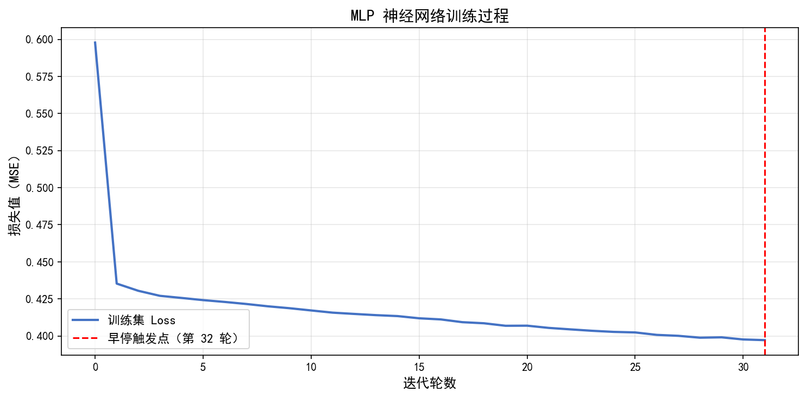
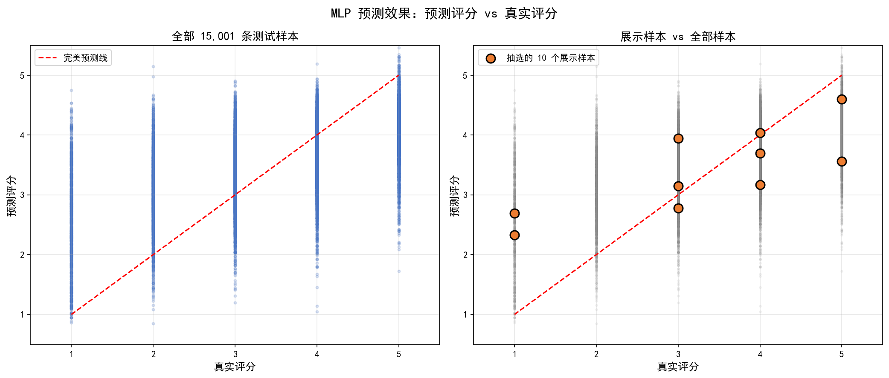
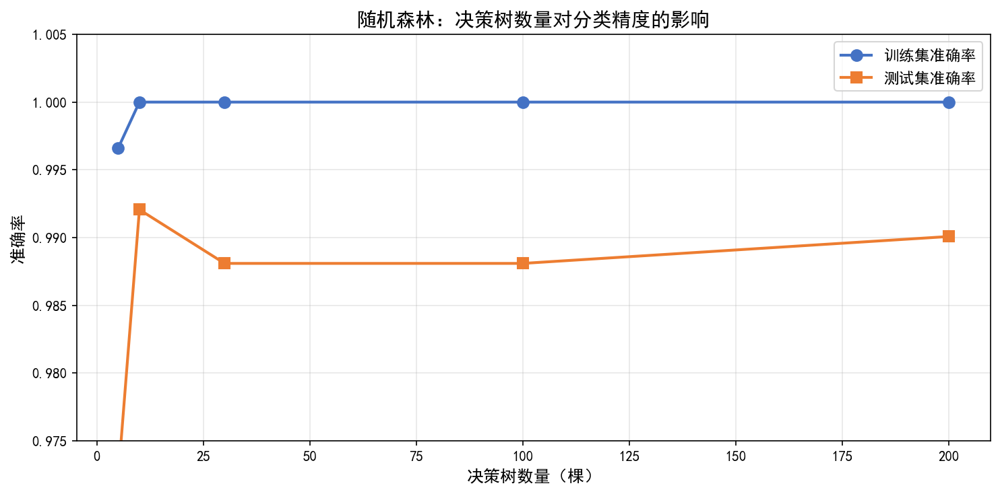
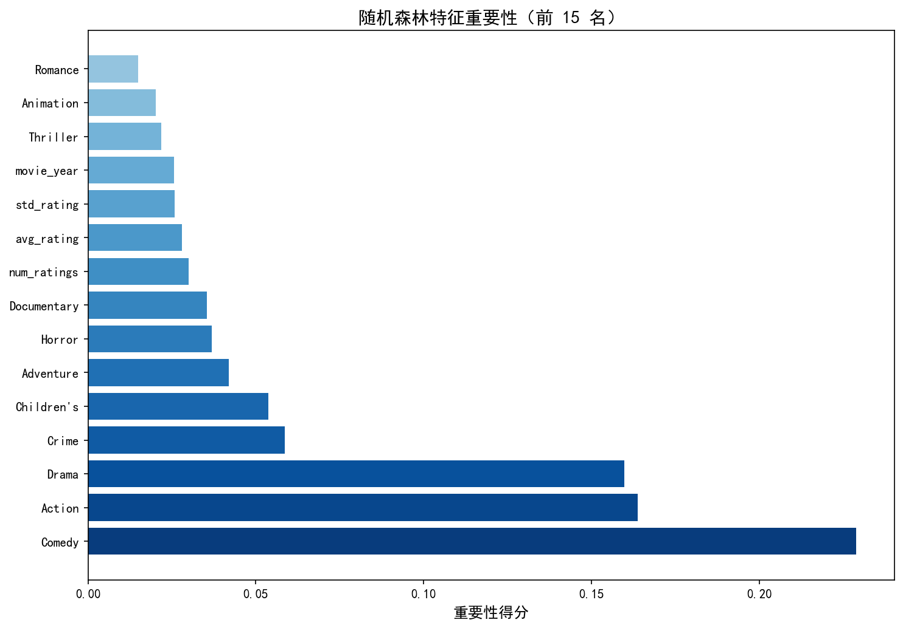
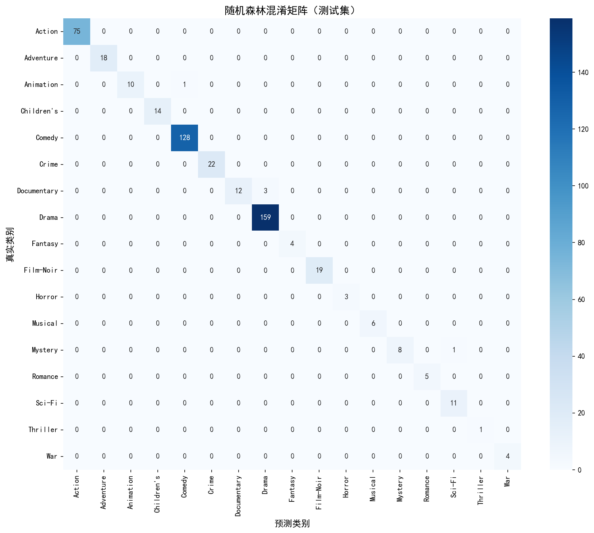

回归任务：评分预测 — Ridge vs MLP
图1：回归模型性能对比

MLP 在三项指标上均优于 Ridge。最优模型 MLP（R²=0.3414, MAE=0.7181），平均预测误差不到 1 分。
图2：MLP 训练 Loss 曲线

Loss 从 0.6 降至 0.4，第 32 轮 EarlyStopping 触发停止。早停策略有效防止了过拟合。
图3：预测评分 vs 真实评分

大部分样本沿完美预测线分布，模型整体预测准确。两端极端评分偏差稍大，属评分预测任务的普遍现象。
最优回归模型: MLP 神经网络 ｜ 参数: hidden_layers=[64,32,16], activation=ReLU, solver=Adam, early_stopping=True
分类任务：电影类型分类 — 决策树 vs 随机森林
图1：决策树数量对分类精度的影响

5 棵树准确率仅 97.2%，增加到 10 棵跃升至 99.2%，之后小幅波动并收敛。200 棵时达到最优（99.0%），边际收益递减。
图2：特征重要性

电影平均评分（avg_rating）是最重要的分类特征，其次是评分人数（num_ratings）和上映年份。不同类型电影的评分水平和热度差异明显。
图3：随机森林混淆矩阵

对角线深蓝、非对角线接近零——绝大多数样本被正确分类。测试集 504 个样本中仅约 5 个误分类，准确率 99.0%。
最优分类模型: 随机森林 (n_estimators=200) ｜ Bagging 集成有效降低方差，泛化优于单棵决策树